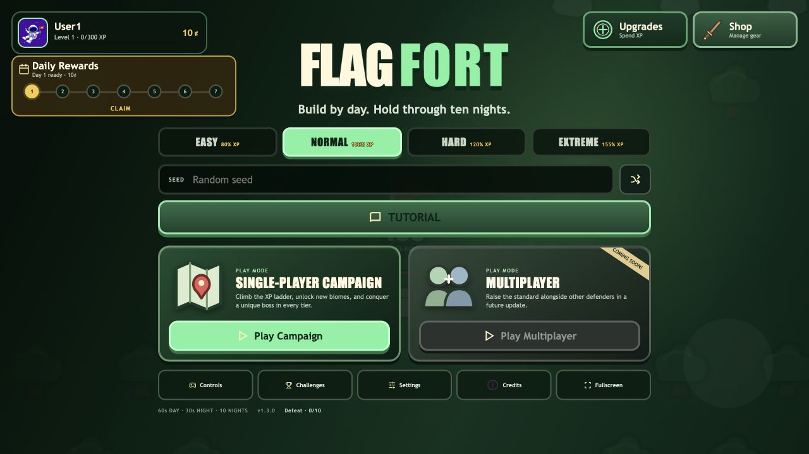
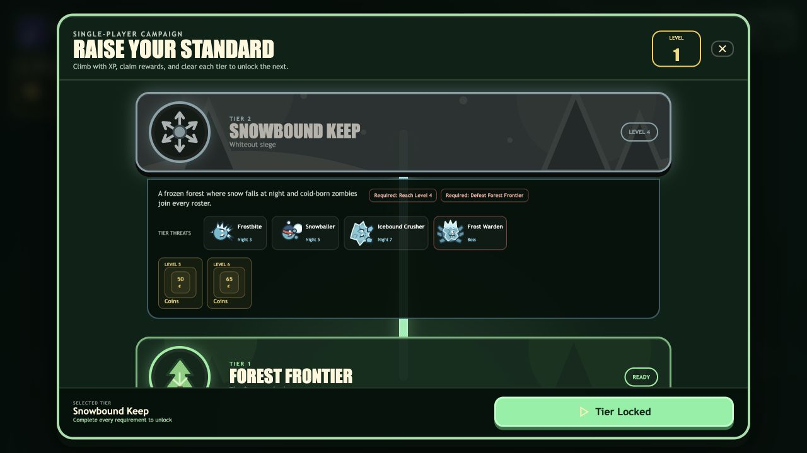
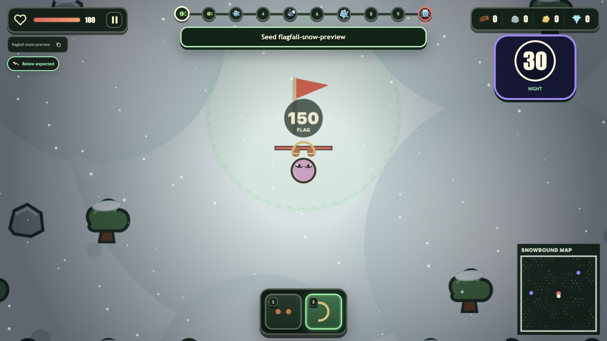
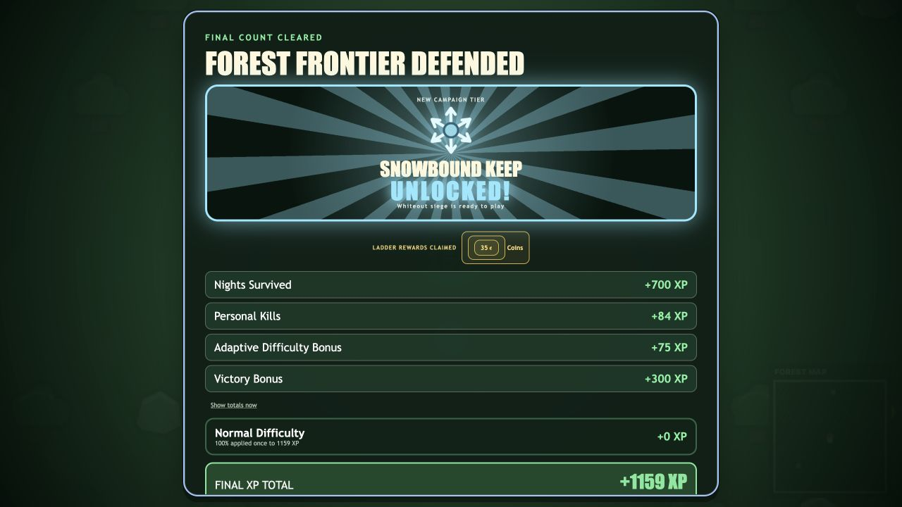

Forest Frontier
- Base game visuals and existing roster selection remain intact.
- Available at Level 1 without a prerequisite.
- The original boss remains the tier boss.
- Level 2 and 3 coin milestones reward early progress.
IMPLEMENTATION COMPLETE
The proven ten-night loop now sits inside an extensible tier ladder with persistent unlocks, configurable rewards, distinct biomes, guaranteed tier threats, and tier-owned bosses.
VERIFIED IN THE REAL GAME




FOUNDATION FOR MANY MORE TIERS
flowchart TD
T["CampaignTierDefinition\nidentity, order, unlocks, rewards"] --> U["Menu and ladder UI"]
T --> P["Profile migration and progression"]
T --> G["Game run configuration"]
T --> R["Seeded roster selection"]
T --> W["Biome and weather rendering"]
T --> B["Tier-specific boss"]
P --> S["Atomic run settlement"]
S --> C["Unlock celebration and reward claim"]
R --> E["Enemy registry stats, behavior, SVG assets"]
G --> D["Deterministic purpose-specific seeds"]SYSTEM BEHAVIOR
VERIFICATION
| Check | Result | What it covers |
|---|---|---|
npm test | PASS - 281 tests | Existing gameplay plus new tier definitions, dual unlock gates, one-time rewards, deterministic snow, and guaranteed Snowbound roster slots. |
npm run build | PASS | Strict TypeScript and production Vite bundle. |
npm run visual:validate | PASS | 248 editable SVGs and all registered gameplay assets. |
| Browser at 1280×720 | PASS | Menu cards, ladder, Snowbound day and night, unlock celebration, and console health. |
| Browser at 960×540 | PASS | CrazyGames compact fit, modal scrolling, Daily Rewards spacing, and bottom controls. |